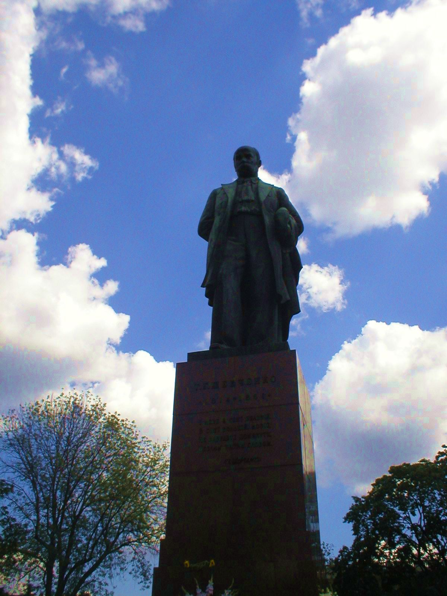

Тарас Григорович Шевченко

Тарас Шевченко - видатний український поет, прозаїк, драматург, художник, політичний і громадський діяч. Він був людиною універсальних обдарувань та інтересів. Все його життя і творчість були присвячені українському народу. Поет мріяв про ті часи, коли його країна буде незалежною суверенною державою, коли в Україні шануватимуться мова, культура та історія народу, а люди будуть щасливими.
Народився в сім'ї селянина 25 лютого (9 березня за новим стилем) 1814 року в селі Моринці на Черкащині. Рано залишився сиротою. Грамоти навчився у дяка. У 14 років його взяли "козачком" до двору поміщика П.Енгельгарда, з яким переїхав спочатку до Вільно, а потім - до Петербурга. У 1832 р. Шевченка віддали "у науку" до художника В.Ширяєва. У 1838 році за пiдтримки К. Брюллова, В. Жуковського, О. Венеціанова, М. Вєльгорського, Є. Гребінки, І. Сошенка та інших Шевченка викупили з кріпацтва.
Того ж року його прийнято до Академії мистецтв, яку він закінчив у 1844 році. У 1843 та 1845 рр. Шевченко приїжджав на Україну i працював художником у Київській тимчасовій комісії з питань розгляду старих актів. У лютому 1847 року Т. Шевченка затверджено на посаду викладача малювання Київського університету. 24 березня 1847 р. за участь в діяльності Кирило-Мефодіївського товариства та за антисамодержавницькі поезії Т. Шевченка заарештовано та заслано до Орської фортеці Оренбурзького окремого корпусу з царською резолюцією про заборону писати i малювати. Під час заслання Шевченко як художник увійшов до складу експедиції, завданням якої було дослідження Аральського моря.
У 1857 році зусиллями друзів Т. Шевченка повернули з заслання й у 1858 році він прибув до Москви, потім до Петербурга. У 1859 році приїхав в Україну, але перебував під наглядом поліції. Йому заборонили постійно проживати в Україні і зобов'язали переїхати до столиці. Десятирічне заслання, хвороби призвели до передчасної смерті Т. Шевченка 26 лютого (за новим стилем 10 березня) 1861 року. Поховали його спочатку на Смоленському цвинтарі у Петербурзi, у травні 1861 року прах перевезли на Чернечу (тепер Тарасову) гору поблизу Канева.
 Т. Шевченко почав писати вірші у другій половині 30-х років. У 1840 році в Петербурзі вийшла його перша збірка поезій "Кобзар", у 1845 році - героїчно-романтична поема "Гайдамаки". В 1843-45 роках він написав цикл поезій "Три літа" (центральним твором якого є "Сон"), поему "Кавказ", послання "І мертвим і живим…", поезії "Чигирине, Чигирине", "Великий льох", "Стоїть в селі Суботові" та ін., в яких гостро виступив проти соціально-національного гноблення українського народу. Під час ув'язнення писав вірші, які згодом об'єднав у цикл"В казематі". У 1854-1858 роках написав російською мовою повісті "Музикант", "Художник", "Нещасний", "Капітанша", "Близнята". Останніми прозовими творами Т. Шевченка є повість "Прогулянка з задоволенням і не без моралі" (1856-1858) та щоденникові записи "Журнал". В Україні у 1858 році Т. Шевченко написав низку високих зразків інтимної та пейзажної лірики. Кілька творів Т. Шевченка цього періоду опубліковано в журналі "Основа" та альманасі "Хата".
Т. Шевченко є одним з найвидатніших майстрів українського образотворчого мистецтва. Він працював у галузях станкового живопису, графіки, монументально-декоративного розпису та скульптури, досконало володів технікою акварелі, олії, офорту, малюнка олівцем і пером. Він є автором понад тисячі мистецьких творів (втрачено бiльше 160). У 1859-1860 роках виконав офорти з творів зарубіжних та російських художників, за які отримав звання академіка гравірування.
Ім'я Тараса Шевченка відоме в усьому світі: у багатьох країнах йому встановлені пам'ятники, його твори перекладені майж е на всі мови світу, його ім'ям в Україні названі навчальні заклади, театри, площі, вулиці, міста. Національна опера України, Київський національний університет, центральний бульвар міста Києва носять ім'я видатного сина українського народу - Тараса Шевченка.